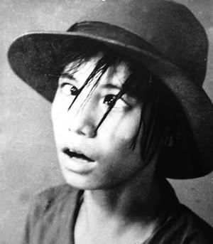

...Nhớ một hôm, đêm đã về khuya, cháu và Ðức lái xe đưa bố Thủy và các bác ra sân bay Nội Bài đón bác Ðính từ Canada về - bác Nguyễn Hữu Ðính trong cuốn sách “Nếu Ði Hết Biển” mà cháu đã đọc đó. Trong khi chờ máy bay đến, bác và cháu đã có dịp nói nhiều chuyện. Ðó là lần đầu tiên hai bác cháu gặp nhau và bác đã hiểu đôi điều về cháu và phải nói rằng bác rất có thiện cảm với cháu.
Do đó, một lẽ thật tự nhiên, khi có ý định viết cuốn sách này, người đầu tiên bác nghĩ đến chính là cháu, hoặc cũng có thể nói, bác viết cũng là để cho cháu và cho người thân, bạn bè của cháu đọc. Bác quí cháu vì vậy thay lời mở đầu cho cuốn chuyện phiếm này bác muốn tâm tình với cháu đôi lời.
Anh cháu là họa sĩ chuyên vẽ tranh trừu tượng phải không?
Nghệ thuật ở cái xứ mình từ thời xưa cho đến bây giờ có ba thứ xa xỉ: Ðó là nhạc giao hưởng, múa ba lê và tranh trừu tượng.
Thời các bác và bố cháu ít cái trừu tượng lắm. Không trắng thì đen, không ta thì địch, lập trường phân minh, giai cấp rõ ràng. Tất cả phải cụ thể, cụ thể như phim bố cháu làm, như các bài báo bố cháu viết.
Nhưng bố cháu và nhiều người khác lại thường bị điều tiếng và bị đối xử theo cách rất... trừu tượng.
Cháu ạ, cuộc đời của bố cháu có nhiều trải nghiệm cay đắng, bác hiểu cháu rất yêu thương bố nhưng đồng thời bác cũng tin rằng cháu chưa hoàn toàn hiểu bố. Ðời bố Thủy có những điều lạ lùng đến khó tin, nhiều người thương lắm kẻ ghét vì vậy bác nảy ra ý định viết chơi về bố cháu. Bố cháu tỏ ra ngại ngùng cộng thêm cái tính lười biếng thường thấy của tuổi già. Ôn lại những trải nghiệm oái oăm, chồng chất, ngổn ngang những rối ren tăm tối, chìm nổi của cuộc đời làm nghề..., chỉ nghĩ đến cũng đã đủ phát hoảng, kể lại thì có cảm giác bị tra tấn một lần nữa!
Ðứa con gái ngoan hiếu thảo chắc chắn rất hiểu bố nhưng bác nghĩ có thể rất nhiều điều cháu sẽ chỉ biết được khi đọc cuốn sách này, vì chẳng mấy khi bố nói chuyện công việc với cháu một cách có đầu có đuôi, có thể một phần do không muốn cháu phải bận tâm, một phần khác, trong con mắt người cha, đứa con luôn luôn bé bỏng.
Nhưng phải viết vì chắc chắn nó có ích, nhất là bây giờ cái tuổi của các bác và bố cháu là tuổi mà các bạn cứ thưa thớt dần, ngồi đếm những người ra đi thì lâu mà tính trên đầu ngón tay những người còn lại thì chóng . Và như Trịnh Công Sơn nói: “ Cái bắt tay thân ái nào cũng có thể là cái bắt tay cuối cùng ”.
...Ghi lại những thăng trầm, những gian nan bố cháu đã trải qua, bác tưởng tượng cháu đang lái chiếc Mercedes bon bon trên đường cao tốc đến buổi tiệc vui. Và sẽ rất thú vị nếu lúc đó cháu nghĩ đến ngày xưa, 5 năm ở Tây Bắc, bố Thủy chỉ có hai điều mơ ước: được ăn no và được đi công tác trên mặt đường bằng phẳng. Bởi vì đói triền miên và cứ bước ra khỏi nhà đi đâu đó là xuống dốc rồi leo dốc, những cái dốc chân bước lên đầu gối chạm cằm... và mỗi chuyến đi là bảy tám trăm cây số! Là nắng cháy thịt cháy da, là mưa phùn gió bấc...
Thế rồi, bố cháu chưa kịp thấy no đủ, chưa kịp thấy đường phẳng dưới đất thì đã thấy bom đạn trên đầu trong chiến trường miền Nam thêm 5 năm nữa.
Bố cháu đi bộ, đi bộ và đã tới nơi, đã đến đích, trong khi nhiều người không được may mắn như thế.
Có vấn đề về tài năng, về nghị lực nhưng còn số phận nữa.
Cuộc sống phải khá dần lên, mỗi ngày một sung sướng hơn, giàu có hơn, nhưng phải giàu cả về vật chất lẫn tâm hồn. Theo nghĩa đó, cháu giàu có và càng san sẻ cháu càng giàu. Cháu giỏi giang và ngoan nết, bố mẹ rất vui vì cháu. Bố mẹ cháu kể với bác rằng cháu lo cho bố mẹ từng li từng tí, lo cả cho những người thân thích, bố mẹ rất mừng vì có đứa con hiếu thảo. Nhưng bố mẹ còn mừng hơn nữa vì hai anh em cháu còn biết lo cho mọi người, biết làm việc thiện, thường cùng bạn bè bỏ tiền túi giúp trẻ em cơ nhỡ. Bố mẹ đã cho các cháu hình hài và tâm hồn. Bác nghĩ lẩn thẩn: Bố mẹ cháu có những người con như các cháu và các cháu có cha mẹ như bố Thủy mẹ Hằng, vậy thì ai sướng hơn ai nhỉ?
Trong cuộc đời còn rất dài của mình, cháu sẽ có những khoảnh khắc ngại ngùng trước khó khăn trắc trở, có những khoảnh khắc thấy se lạnh trống vắng... bác nghĩ khi ấy những tâm tư của bố mà bác ghi lại trong cuốn sách này sẽ giúp cháu ấm lòng hơn, vững vàng hơn, giúp cháu thấy cuộc đời có cay đắng nhưng cũng không ít ngọt ngào, vấn đề là ý chí và sự cảm nhận mà thôi.
Bác hy vọng rằng khi gấp sách lại, cháu sẽ càng thương bố mẹ hơn, biết ơn bố mẹ hơn, cảm phục bố mẹ hơn. Qua đó bố mẹ sẽ được mát lòng nhưng cháu sẽ được một thứ lớn hơn, đó là sự hoàn thiện về nhân cách. Ðiều đó mới quan trọng cháu ạ!
Tuy là chuyện gia đình, nhưng bác nghĩ, khi đọc những mẩu chuyện về bố cháu, bạn bè cháu và lớp người cùng trang lứa có thể có những cảm nhận khác nhau nhưng chắc chắn họ đều rút ra được những điều tốt đẹp cho tâm hồn – tất nhiên nếu họ muốn hướng tới điều đó – để đi trên con đường còn rất dài của mình.
☆

Năm 1953, cậu bé Trần Văn Thủy 13 tuổi, được bố gửi đi “học nghề” ở nhà người bạn, đó là ông chủ hiệu ảnh phố Paul Bert, Nam Ðịnh. Cậu bắt đầu làm quen với “phim” và “ảnh”, còn “phim ảnh” thì là mãi về sau....
Cậu bé không những tự chụp ảnh, tự “hóa trang” mà còn... tự diễn, mặc dù kĩ năng diễn mới chỉ đến lác mắt và há miệng là hết!
Nhưng tính cách độc đáo khác người và thói quen thích làm phim là làm “từ A đến Z” đã nảy sinh từ ngày đó và bám theo đạo diễn Trần Văn Thủy đến suốt đời...
Ðó là cả một CÂU CHUYỆN DÀI...
☆